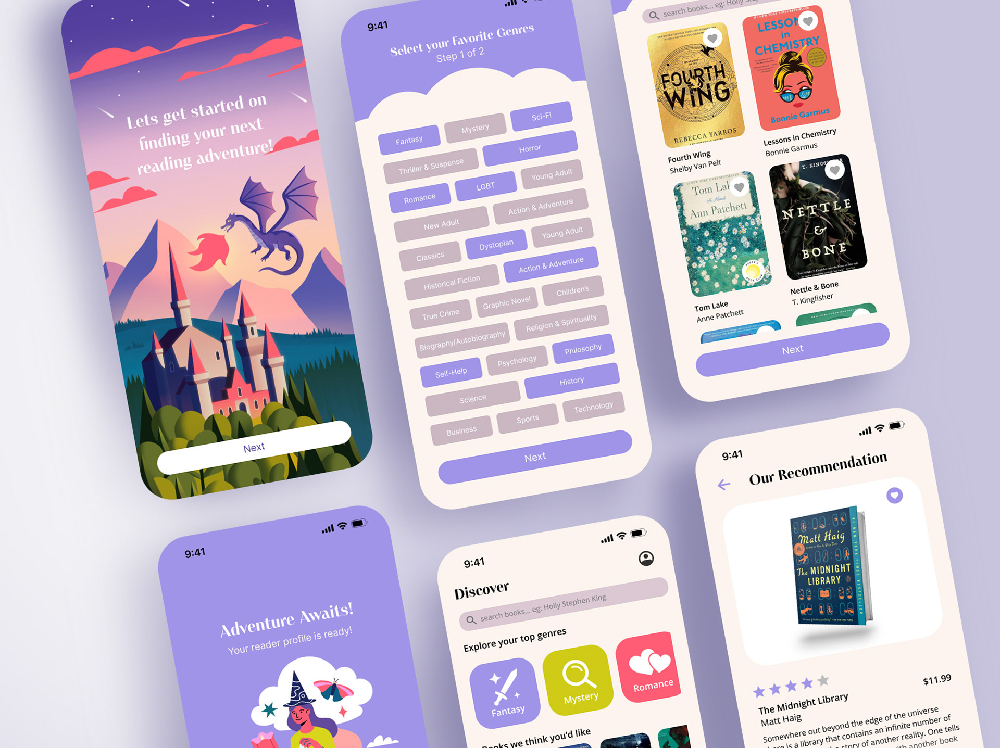

Book Dragon
Designing a book-lovers community hub
Book Dragon is a comprehensive library and e-reader application designed to provide book recommendations, facilitate discussions, and enhance the reading experience. Unlike existing apps such as Libby, Kindle, or Goodreads, Book Dragon integrates personalized AI-driven recommendations, an in-app reading experience, and interactive forums where readers can engage with others who share their literary interests.
Context
This project was created as a personal endeavor to showcase my UI/UX design skills from research to final implementation. As an avid reader, I sought to develop an app that addresses common pain points in existing library and e-reader applications. My goal was to create a platform that allows users to seamlessly discover, read, review, and discuss books in a single, intuitive interface. Additionally, I wanted to incorporate a feature that mimics real-life library lending by enabling users to share their checked-out titles with friends and family.
Research
User research
Understanding the target demographic was a crucial first step. Based on research, the primary users of Book Dragon are highly educated Americans aged 24 to 60, with a slight majority being female. These users value creativity, transparency, intellect, and community. Their primary goal is to quickly find high-quality book recommendations, organize their reading lists, and engage in meaningful discussions about books they love.
Competition Analysis

To ensure Book Dragon offers unique value, I conducted an analysis of existing book-related apps, including:
- Apple Books
- Goodreads
- Kindle
- Libby
- Barnes & noble nook
- Bookmory
- Book buddy Storygraph: reading tracker
- Fable: Books & TV
I examined each app’s user experience, identifying strengths and areas for improvement. Notable gaps included a lack of well-integrated recommendation engines, limited social engagement, and inconsistent book-sharing capabilities
Information architecture

During the wireframing phase, I prioritized user mental models by aligning the design with established digital conventions. This ensures a frictionless experience, reducing cognitive load and improving usability. I also allocated space for search analytics, which can later be leveraged for refining the recommendation algorithm and improving search functionality
Design
Branding
BookDragons mission is simple: to provide a broad scope of literary works for all people, and to nurture a community of like-minded book lovers. BookDragon champions intellectual curiosity, academic freedom, and inclusivity. As such, I wanted the branding to reflect this committment to openness and imagination.

Prototyping
Book Dragon was designed with a range of features to enhance the reading experience. It provides access to a vast library of both public and private book collections, along with AI-driven recommendations tailored to individual reading habits. A built-in e-reader offers customization options such as adjustable fonts, font sizes, and dark mode for a personalized reading experience. Readers can seamlessly sync bookmarks, reading progress, and highlights across devices, as well as send books to Kindle or third-party reading apps. A reading tracker offers insights into reading habits, genres, and trends, while discussion forums foster community engagement and book reviews. Additionally, a lending feature allows users to share checked-out library books with others, making Book Dragon a comprehensive platform for book lovers.
Because book readers and writers alike both value imagination and creativity, I decided to use an illustrative approach for this app design. I chose the color purple for it’s association with the fantasy genre, and because it is not a commonly used color amongst book apps. Books are also a highly physical medium, and though in general digital design has moved away from skeuomorphism, I decided to use a skeuomorphic approach for this project since according to pew research, 68& of book responders said that like the physicality of a real book.